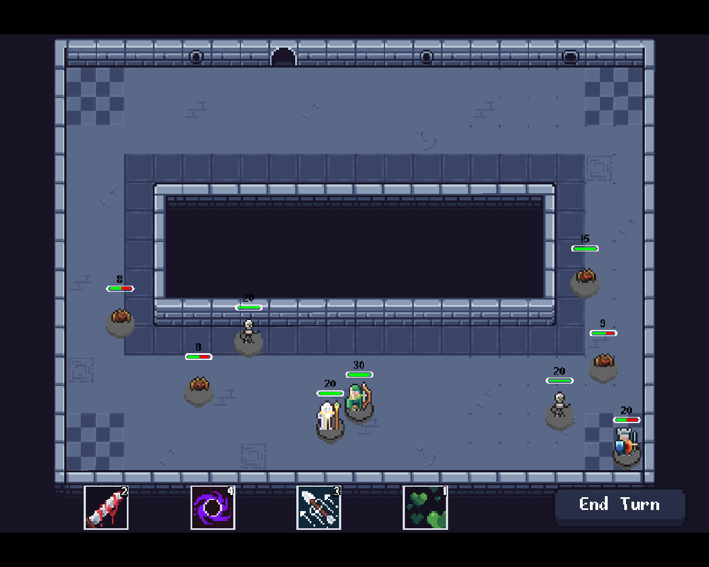
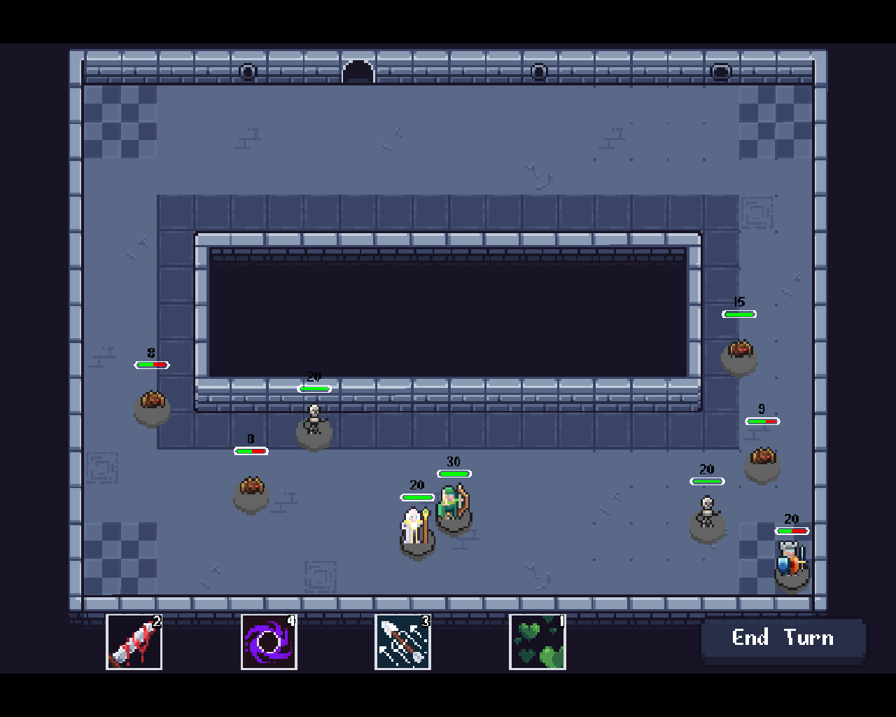

About
Hi, my name is Víctor.
I'm a graduate in Multimedia Engineering with a strong passion for game development. Since I started learning programming, I've always been curious about how games work under the hood. That's why most of my projects lean toward the low-level side, using libraries and frameworks instead of game engines, as I believe that a deeper understanding of the fundamentals is essential. I'm always looking for new challenges and projects that allow me to expand my knowledge and skills.
Projects
Farming Spirits
What is Farming Spirits?
Farming Spirits is an arcade retro game where the player has to defeat numerous waves of enemies using different attacks. The game was made in assembly Z80 for the Amstrad CPC 464 using CPCTelera. It was created as part of a university project and was also submitted to the #CPCRetroDev 2022 contest, where it won two awards: third place in the UA Category and Best Novice Game from the Ready&Play sponsor.
My contributions
I worked on this project primarily as a programmer, but I also contributed to the game design alongside a classmate. Among the tasks I worked on, the most important were:
- Entity manager: Developed the entity manager to handle the creation, update and destruction of the player, enemies and attacks.
- Collisions: Created a collision system to detect projectile collisions.
- Level system: Designed and developed the level system, which used a custom binary format to define each level. This system was responsible for controlling enemy spawns, enemy movement, and detecting when the level had ended.
- Levels: Designed and created several levels.
Dice Dungeon
What is Dice Dungeon?
Dice Dungeon is a small and simple turn-based strategy game where the player has to roll dice to perform actions and defeat enemies in order to complete levels. I created this game for my final degree project using C# and the MonoGame framework. I made this project in order to explore several topics in game development that I was interested in, so more than a game, it can be considered a technical demo.

 



Technical Achievements
Among the topics I wanted to research, the most notable implementations include:
- Entity manager: An entity system based on the ECS architecture. I had previously implemented an ECS, but it didn't allow attaching multiple components of the same type to a single entity, so I implemented a more flexible version that supported this feature.
- UI: A basic and responsive UI System built around constraints.
- AI: A few AI related algorithms, including pathfinding, path-following and some modular decision trees.
- Physics: A simple but functional physics system using the ECS previously mentioned.
Physics Example
Hell Hunter
What is Hell Hunter?
Hell Hunter is a fast-paced first-person shooter where your main goal is to survive as long as possible and achieve the highest score, all while your health continuously decreases. In order to survive, you must constantly kill demons to recover some health. This game was made from scratch using C++, OpenGL, and several libraries as part of a university project.
My contributions
I was greatly involved in the design of the game but my main role was as the lead programmer. Among the things I implemented for the game, the most remarkable were:
- Graphics: I developed the entire graphics engine, featuring a 3D tiled-deferred renderer with compute shader lightmap calculation, supporting up to 2048 active small lights. The engine also included skinned meshes with animations, a basic material system, a scene graph for object hierarchies with static spatial partitioning, and particle systems with three emitter types. I also implemented several rendering techniques such as cascaded shadow mapping, normal and parallax mapping, skyboxes, SSAO, and a bloom post-processing effect. Additionally, I developed a 2D sprite batcher for rendering sprites and text, as well as a simple UI system.
- Entity manager: Designed and developed a template-based entity system built on the ECS architecture.
- Screens and menus: Designed and programmed all in-game screens.
- Gameplay loop: Programmed the core gameplay loop, including the enemy spawn system, player controls and mechanics, power-ups and camera movement.